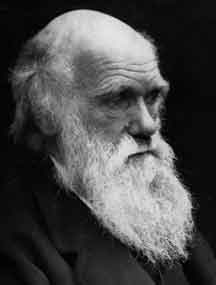

17 CHARLES DARWIN 1809-1882
Lahirnya
bersamaan benar dengan Abraham Lincoln, 12 Februari 1809 di
Shrewsbury, Inggris. Charles Darwin penemu teori evolusi
organik dalam arti seleksi alamiah ini pada umur enam belas
tahun masuk Universitas Edinburg belajar kedokteran, tetapi
baik kedokteran maupun anatomi dianggapnya ilmu yang bikin
jemu. Tak lama kemudian dia pindah ke Cambridge belajar
unsur administrasi perkantoran. Walau begitu, berburu dan
naik kuda di Cambridge jauh lebih digemarinya ketimbang
belajar ilmu itu. Dan walaupun begitu, dia toh masih bisa
memikat perhatian salah satu mahagurunya yang mendorongnya
supaya ikut dalam pelayaran penyelidikan di atas kapal
H.M.S. Beagle sebagai seorang naturalis. Mula-mula ayahnya
keberatan dengan penunjukan ini. Pikirnya, perjalanan macam
itu hanyalah dalih saja buat Darwin yang enggan dengan
pekerjaan serius. Untungnya, belakangan sang ayah bisa
dibujuk dan merestui perjalanan itu yang akhirnya ternyata
merupakan perjalanan yang paling berharga dalam sejarah ilmu
pengetahuan Eropa.
Darwin mulai berangkat berlayar di atas kapal Beagle
tahun 1831. Waktu itu umurnya baru dua puluh dua tahun.
Dalam masa pelayaran lima tahun, kapal Beagle mengarungi
dunia, menyelusuri pantai Amerika Selatan dalam kecepatan
yang mengasyikkan, menyelidiki kepulauan Galapagos yang
sunyi terpencil, mengambah pulau-pulau di Pacifik, di
Samudera Indonesia dan di selatan Samudera Atlantik. Dalam
perkelanaan itu, Darwin menyaksikan banyak
keajaiban-keajaiban alam, mengunjungi suku-suku primitif,
menemukan jumlah besar fosil-fosil, meneliti pelbagai macam
tetumbuhan dan jenis binatang. Lebih jauh dari itu, dia
membuat banyak catatan tentang apa saja yang lewat di depan
matanya. Catatan-catatan ini merupakan bahan dasar bagi
hampir seluruh karyanya di kemudian hari. Dari
catatan-catatan inilah berasal ide-ide pokoknya, dan
kejadian-kejadian serta pengalamannya jadi penunjang
teori-teorinya.
Darwin kembali ke negerinya tahun 1836 dan dua puluh
tahun sesudah itu dia menerbitkan sebarisan buku-buku yang
mengangkatnya menjadi seorang biolog kenamaan di Inggris.
Terhitung sejak tahun 1837 Darwin yakin betul bahwa binatang
dan tetumbuhan tidaklah bersifat tetap, tetapi mengalami
perubahan dalam perjalanan sejarah geologi. Pada saat itu
dia belum sadar apa yang menjadi sebab-musabab terjadinya
evolusi itu. Di tahun 1838 dia baca esai "Tentang
prinsip-prinsip kependudukan" Thomas Malthus. Buku Malthus
ini menyuguhkannya fakta-fakta yang mendorongnya lebih yakin
adanya seleksi alamiah lewat kompetisi untuk mempertahankan
kehidupan. Bahkan sesudah Darwin berhasil merumuskan
prinsip-prinsip seleksi alamiahnya, dia tidak tergesa-gesa
mencetak dan menerbitkannya. Dia sadar, teorinya akan
mengundang tantangan-tantangan. Karena itu, dia memerlukan
waktu lama dengan hati-hati menyusun bukti-bukti dan
memasang kuda-kuda untuk mempertahankan hipotesanya jika ada
serangan.
Garis besar teorinya ditulisnya tahun 1842 dan pada tahun
1844 dia mulai menyusun bukunya yang panjang lebar. Di bulan
Juni 1858, tatkala Darwin masih sedang menambah-nambah dan
menyempurnakan buku karya besarnya, dia menerima naskah dari
Alfred Russel Wallace (seorang naturalis Inggris yang waktu
itu berada di Timur) menggariskan teorinya sendiri tentang
evolusi. Dalam tiap masalah dasar, teori Wallace bersamaan
dengan teori Darwin! Wallace menyusun teorinya secara
betul-betul berdiri di atas pikirannya sendiri dan mengirim
naskah tulisannya kepada Darwin untuk minta pendapat dan
komentar dari ilmuwan kenamaan itu sebelum masuk percetakan.
Situasinya menjadi tidak enak karena mudah berkembang jadi
pertarungan yang tidak dikehendaki untuk perebutan
prioritas. Jalan keluarnya, baik naskah Wallace maupun
garis-garis besar teori Darwin secara berbarengan dibahas
oleh sebuah badan ilmiah pada bulan berikutnya.
Cukup mencengangkan, pengedepanan masalah ini tidak
begitu diacuhkan orang. Buku Darwin The Origin of Species
terbit pada tahun berikutnya, menimbulkan kegemparan. Memang
kenyataannya mungkin tak pernah ada diterbitkan buku ilmu
pengetahuan yang begitu tersebar luas dan begitu jadi bahan
perbincangan yang begitu hangat, baik di lingkungan para
ilmuwan maupun awam seperti terjadi pada buku On the Origin
of Species by Means of Natural Selection, or The
Preservation of Favoured Races in the Strugle for Life.
Saling adu argumen tetap seru di tahun 1871 tatkala Darwin
menerbitkan The Descent of Man, and Selection in Relation to
Sex. Buku ini, mengedepankan gagasan bahwa manusia berasal
dari makhluk sejenis monyet, makin menambah serunya
perdebatan pendapat.
Darwin sendiri tidak ambil bagian dalam perdebatan di
muka publik mengenai teori yang dilontarkannya. Bisa jadi
lantaran kesehatan karena sehabis perkelanaannya yang begitu
parrjang dengan kapal Beagle (besar kemungkinan akibat
demam, akibat penyakit Chaga gigitan serangga di Amerika
Latin). Dan bisa jadi karena dia merasa cukup punya
pendukung gigih semacam Thomas H. Huxley seorang jago debat
dan pembela teori Darwin, sebagian terbesar ilmuwan
menyetujui dasar-dasar kebenaran teori Darwin tatkala yang
bersangkutan niati tahun 1882.
Sebenarnya --jika mau bicara tulen atau tidak tulen--
bukanlah Darwin penemu pertama teori evolusi makhluk.
Beberapa orang telah menyuarakannya sebelum dia, termasuk
naturalis Perancis Jean Lamarek dan kakek Darwin sendiri,
Erasmus Darwin.
Tetapi, hipotesa mereka tidak pernah diterima oleh dunia
ilmu pengetahuan karena tak mampu memberi keyakinan
bagaimana dan dengan cara apa evolusi terjadi. Sumbangan
Darwin terbesar adalah kesanggupannya bukan saja menyuguhkan
mekanisme dari seleksi alamiah yang mengakibatkan terjadinya
evolusi alamiah, tetapi dia juga sanggup menyuguhkan banyak
bukti-bukti untuk menunjang hipotesanya.
Layak dicatat, teori Darwin dirumuskan tanpa sandaran
teori genetik apa pun atau bahkan dia tak tahu-menahu
mengenai pengetahuan itu. Di masa Darwin, tak seorang pun
faham ihwal khusus bagaimana suatu generasi berikutnya.
Meskipun Gregor Mendel sedang merampungkan hukum-hukum
keturunan pada tahun-tahun berbarengan dengan saat Darwin
menulis dan menerbitkan bukunya yang membikin sejarah, hasil
karya Mendel yang menunjang teori Darwin begitu sempurnanya,
Mendel nyaris sepenuhnya tak diacuhkan orang sampai tahun
1900, saat teori Darwin sudah begitu mapan dan mantap. Jadi,
pengertian modern kita perihal evolusi --yang merupakan
gabungan antara ilmu genetik keturunan dengan hukum seleksi
alamiah-- lebih lengkap ketimbang teori yang disodorkan
Darwin.
Pengaruh Darwin terhadap pemikiran manusia dalam sekah.
Dalam kaitan dengan ilmu pengetahuan murni, tentu saja, dia
sudah melakukan tindak revolusioner semua aspek bidang
biologi. Seleksi alamiah betul-betul punya prinsip yang
teramat luas serta mendasar, dan pelbagai percobaan sudah
dilakukan penerapannya di pelbagai bidang-seperti
antropologi, sosiologi, ilmu politik dan ekonomi.
Bahkan barangkali pengaruh Darwin lebih penting terhadap
pemikiran agama ketimbang terhadap segi ilmu pengetahuan
atau sosiologi. Pada masa Darwin dan bertahun-tahun
sesudahnya, banyak penganut setia Nasrani percaya bahwa
menerima teori Darwin berarti menurunkan derajat kepercayaan
terhadap agama. Kekhawatiran mereka ini barangkali ada
dasarnya biarpun jelas banyak sebab faktor lain yang jadi
lantaran lunturnya kepercayaan beragama. (Darwin sendiri
menjadi seorang sekuler).
Bahkan atas dasar sekuler, teori Darwin mengakibatkan
perubahan besar pada cara manusia dalam hal mereka
memikirkan ihwal dunia mereka (bangsa manusia itu tampaknya)
secara keseluruhan tidak lagi menduduki posisi sentral dalam
skema alamiah alam makhluk sebagaimana tadinya mereka
akukan. Kini kita harus memandang diri kita sebagai salah
satu bagian saja dari sekian banyak makhluk dan kita
mengakui adanya kemungkinan bahwa sekali tempo akan
tergeser. Akibat dari hasil penyelidikan Darwin, pandangan
Heraclitus yang berkata, "Tak ada yang permanen kecuali
perubahan" menjadi diterima secara lebih luas. Sukses teori
evolusi sebagai penjelasan umum mengenai asal-usul manusia
telah lebih mengokohkan kepercayaan terhadap kemampuan ilmu
pengetahuan menjawab segala pertanyaan dunia fisik (walaupun
tidak semua persoalan manusia dan kemanusiaan). Istilah
Darwin, "Yang kuat mengalahkan yang lemah" dan "Pergulatan
untuk hidup" telah masuk menjadi bagian kamus kita.
Memang teori Darwin akan terjelaskan juga walau misalnya
Darwin tak pernah hidup di dunia. Apalagi diukur dari apa
yang sudah dihasilkan Wallace, hal ini amat mengandung
kebenaran, lebih dari ihwal siapa pun yang tertera di dalam
daftar buku ini. Namun, adalah tulisan-tulisan Darwin yang
telah merevolusionerkan biologi dan antropolgi dan dialah
yang telah mengubah pandangan kita tentang kedudukan manusia
di dunia.
|